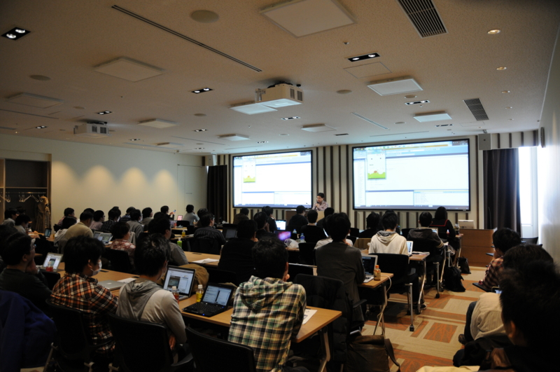
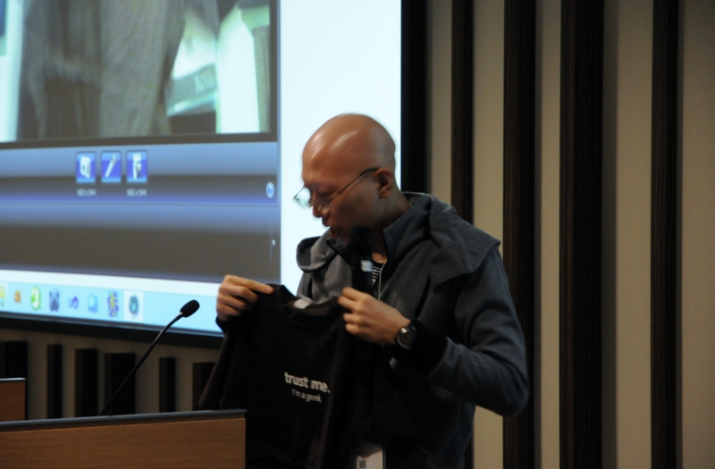

プログラミング生放送勉強会 第14回＠品川 に参加してきました #pronama
公開日：

プログラミング生放送勉強会 第13回＠愛媛 に参加してきました #pronama - だるろぐ に続いての、2週連続参加。今回はひたすらモバイル、モバイル、モバイル。狙ってテーマを統一したわけではないと思いますが、たまたまモバイル一色に。それだけアツいジャンルてことなんでしょうね。品川のマイクロソフトさんのセミナールームをお借りしたのですが、60席では足りず、ついかの椅子を引っぱり出してやっとこさ間に合わせるという、まさに満員御礼。スピーカーの方、参加者の方、おつかれさまでした。

ちょっと低レベルなゲームデバッグのお話 C言語＋iOS
個人レベルで作れる規模のゲームを想定して、作ったゲームのデバッグモードなども交えつつ、デバッグに便利なプログラムを紹介。基本的にデバッガなどを使わない、自分のプログラムでデバッグ機能を作っていく、ちょっと低レベルなお話になります。低レベルの意味を間違えないで下さい(笑)
まかべひろし (@sinpen) さん
あ、そうか。今日話したものの資料はこちらです mcf.cn/~mk/120407/
— まかべひろしさん (@sinpen) 4月 7, 2012『Moai』で日曜スマフォプログラミング
プログラミング言語 Lua で記述できる、スマフォ/PC/ブラウザに対応した 2D ゲーム向けプラットフォーム『Moai SDK』で簡単なゲームを作ってみました。同じくLua で簡単に Web サービスを作れる『Moai Cloud』も使ってみます。
きりん (@kirin_nico) さん
@jz5 起きてます、が、また12時チョイ過ぎになりそう・・・
— きりん＠amazonで買えますさん (@kirin_nico) 4月 7, 2012Mono for Android and Xamarin mobile products
クロスプラットフォームで .NET 環境を実現する Mono プロジェクト、そこから生まれた Mono for
Android について、その使い方や技術的な仕組み、Xamarin のモバイル製品の方向性などをお話しします。榎本 温 (@atsushieno ) さん Xamarin mono hacker
資料これです dl.dropbox.com/u/493047/2012/… #pronama
— Atsushi Enoさん (@atsushieno) 4月 7, 2012Javascript だけで Android/iPhone アプリを作れる Titanium Mobile の紹介
必須のテクノロジーとなったスマートフォン、タブレット向けのアプリケーションを JavaScript で実装できるフレームワーク Titanium の基礎を解説。WEB アプリケーション開発者だったあなたもスマートフォンアプリ開発にデビューしましょう。
増井 雄一郎 (@masuidrive) さん
今日は、プロ生 #pronama に来てます！ #TitaniumJP
— Yuichiro MASUIさん (@masuidrive) 4月 7, 2012プログラミング生放送勉強会 第14回＠品川 #pronama : ATNDライトニングトーク
- @takutok さん「PSVITA開発のすゝめ」
- @oidong1 さん「Processing for Android とは何だったのか」
- @KOBA789 さん 「（Node.js を使った何かのようです）」
- @daisuke_nomura さん 「（Windows Phone 関連）」
- @sattch02 さん「磯野！Processingやろうぜ！」
- @kanaharu さん 「（ニコ生関連）」
個人的には Mono for Android、Titanium Mobile が興味を引きました。 Mono for Android はちょっとお高いんで手が出ないけれど（C#で書けるというのはすごい魅力的なんだけどなぁ）、 Titanium Mobile は今度触ってみよう。
ライトニングトークはもう少し追加の参加者がいたような。以下の二名が追加だったのかな。
- @yosida95 さん「Python meets MongoDB」
- @uzuki_aoba
プロ生はニコニコ動画を舞台にしているせいか、高校生の参加者も多い感じ。おじさん、圧倒されてしまうわ！
会場で泣きながらライトニングトークのスライドとデモを準備をする @sattch02 を激写。少し今更感のある赤さんを Processing でシンプルかつ大胆に料理。参加者のココロを深くえぐる、インパクトなデモになりました。
こちらは LT もつとめてくれた @daisuke_nomura の極秘プロダクトをパパラッチ。これはクールだ！ Windows 8 のリリースが待ち遠しいでござる。しかしこの VAIO 、カッコイイな……

もちろん、おやつやじゃんけん大会も。なんと、オレ様、Tシャツもらっちゃったんだぜ！
懇親会で少し伝説の後始末をするハメになりましたが（笑）、周りの方にも助けられて無事終えました。そういえば #pronama が日本のツイートランキング5位になったし、なんだかんだで14回目は記憶に残る回になりそうです。
1.#ぼって打って最初に出てきたものがあなたの現状2.150号3.AKB握手4.小久保5.#pronama6.阪神牝馬S7.泉ピン8.#フォロワーの名前で予測変換9.オフサイド10.代々木公園goo.gl/ipUoR
— 日本のツイートランキングさん (@tweet_trends_w) 4月 7, 2012それでは、今度は4月の終わりごろ、ニコニコ超会議2012 公式サイト でお会いしましょう。